Reparaciones de conectores
El apartado Reparaciones de conectores incluye una lista de todas las reparaciones de conectores. Las reparaciones de conectores se clasifican por fabricante y por tipo de conector. Si el técnico es incapaz de identificar el fabricante del conector, consulte Identificación de conectores a continuación. Si se sabe quién es el fabricante del conector, será más fácil encontrar la reparación correcta en la siguiente lista:
Anatomía del conector
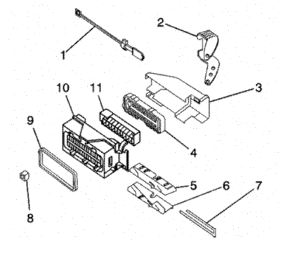
|
|---|
| (1) | Seguro positivo del conector (CPA) |
| (2) | Palanca auxiliar |
| (3) | Cubierta del portacables |
| (4) | Relevador de tensión de la junta |
| (5) | Mano izquierda corrediza |
| (6) | Mano derecha corrediza |
| (7) | Seguro positivo de terminal (TPA) |
| (8) | Seguro positivo de terminal (TPA) |
| (9) | Junta del conector |
| (10) | Carcasa del conector |
| (11) | Conector interior |
Identificación de conectores
Saber quién es el fabricante del conector ayuda a localizar el procedimiento de reparación correcto: Hay muchos diseños diferentes de conectores que se usan en los vehículos GM y a veces resulta difícil identificar a su fabricante. La información del presente documento debe servir para la identificación de dichos fabricantes.
Los siguientes son los principales fabricantes de la mayoría de conectores en los vehículos GM:
| • | AFL/EPC (Alcoa Fujikura Ltd./Engineered Plastics Components) |
| • | FCI (Framatome Connectors International) |
| • | JAE (Japan Aviation Electronics) |
| • | JST (Japan Solderless Terminals) |
A menudo resulta difícil identificar la marca comercial de un conector. Cuando trate de determinar el fabricante de un conector, busque marcas de identificación específicas que son exclusivas de ese proveedor de conectores. La mayoría de dichas marcas identificadoras son difíciles de ver o encontrar. Revise el conector detenidamente y consulte la siguiente información en busca de imágenes y descripciones de las marcas identificadoras de los conectores.
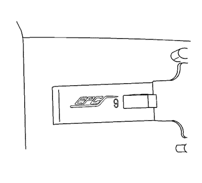
| • | La mayoría de conectores AFL llevan EPC en el cuerpo del conector. Algunos de los conectores más pequeños no llevarán marcas. |
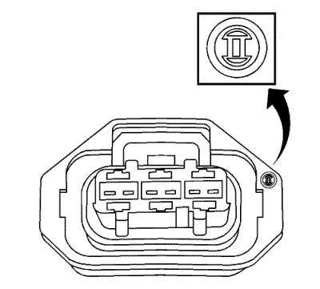
| • | En algunos casos el conector llevará impreso Bosch. Si en el conector no aparece la palabra Bosch, busque el logotipo de Bosch, El logotipo Bosch es un círculo con una flecha embotada en su interior. El logotipo puede estar en cualquier parte del conector y a menudo es muy pequeño. |
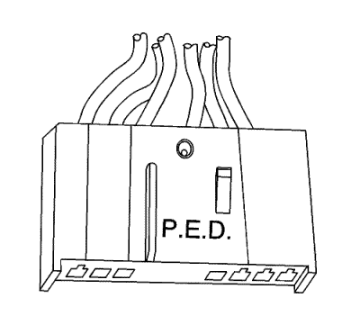
| • | En algunos casos el conector llevará impreso Delphi. Si Delphi no se ha imprimido en el conector, busque PED. En los dos casos no hay una orientación específica para Delphi o PED y puede aparecer en cualquier lugar del conector. |
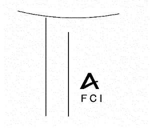
| • | Es posible que los conectores FCI incluyan su logotipo, Que son las letras fci con una "A" encima. |
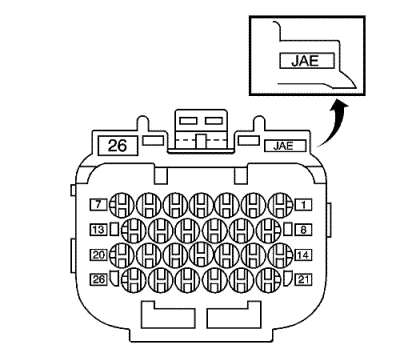
| • | El conector JAE presenta estas siglas en letras pequeñas. |
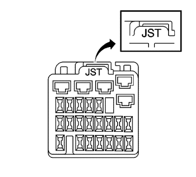
| • | En los conectores JST pasa algo parecido a lo anterior, pone JST en letras pequeñas. La ubicación del logotipo varía con el tamaño y el estilo del conector. |
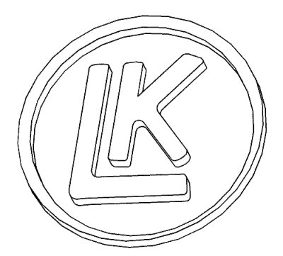
| • | Kostel lleva una "LK" con un círculo alrededor. Estos conectores se suelen usar para la conexión del cambio. |
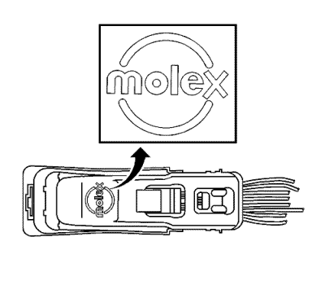
| • | La mayoría de conectores Molex tendrán el logotipo Molex en su cubierta. En algunos casos en los conectores puede poner MX seguida de otra letra. La tercera letra indica dónde se hizo el conector. Un conector Molex que ponga MXD es que se hizo en Detroit. |
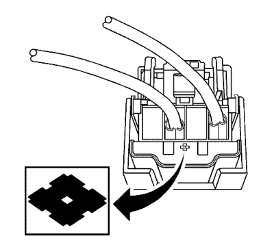
| • | Sumitomo pone un símbolo inconfundible en sus conectores y, posiblemente, algún número de pieza. El símbolo se parece a un diamante sobre una de sus caras, similar al mostrado: El logotipo podría aparecer en cualquier parte, pero lo más normal es que lo haga en el lado del cable de la carcasa. |
| • | Los conectores Tyco/AMP tienen muchos diseños exclusivos y diferentes. Algunos pueden llevar o no marcas identificables. |
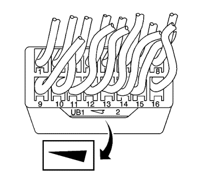
| • | Yazaki tiene una en forma de cuña o de flecha, parecido al que se muestra. |
| © Copyright Chevrolet. Reservados todos los derechos |